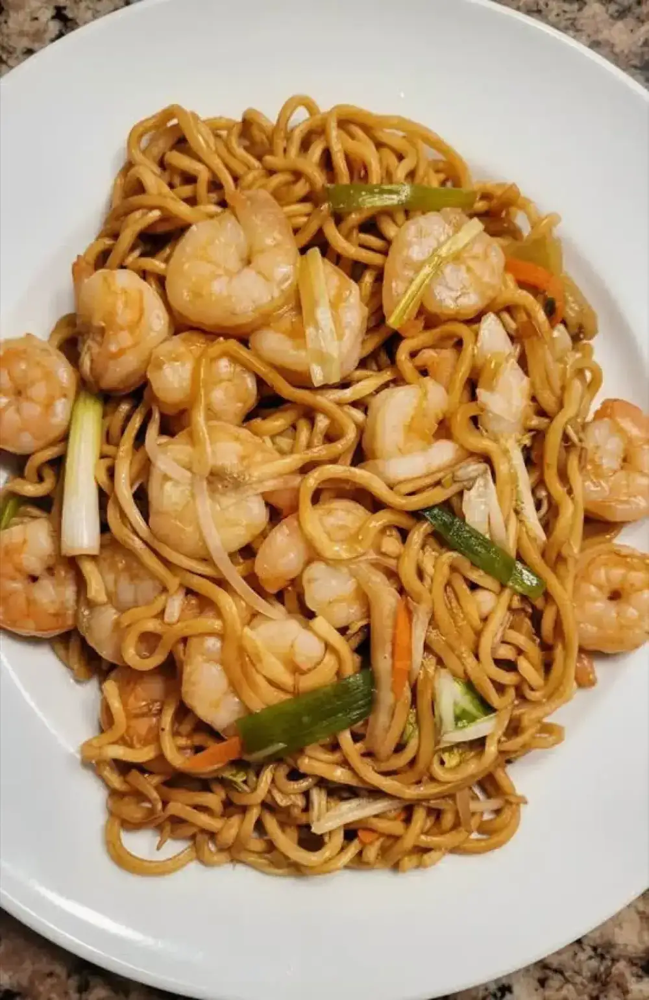
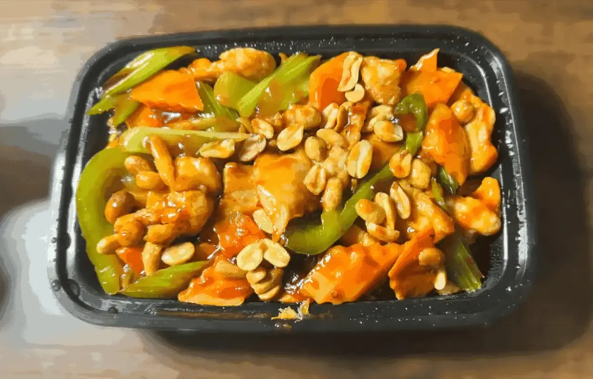
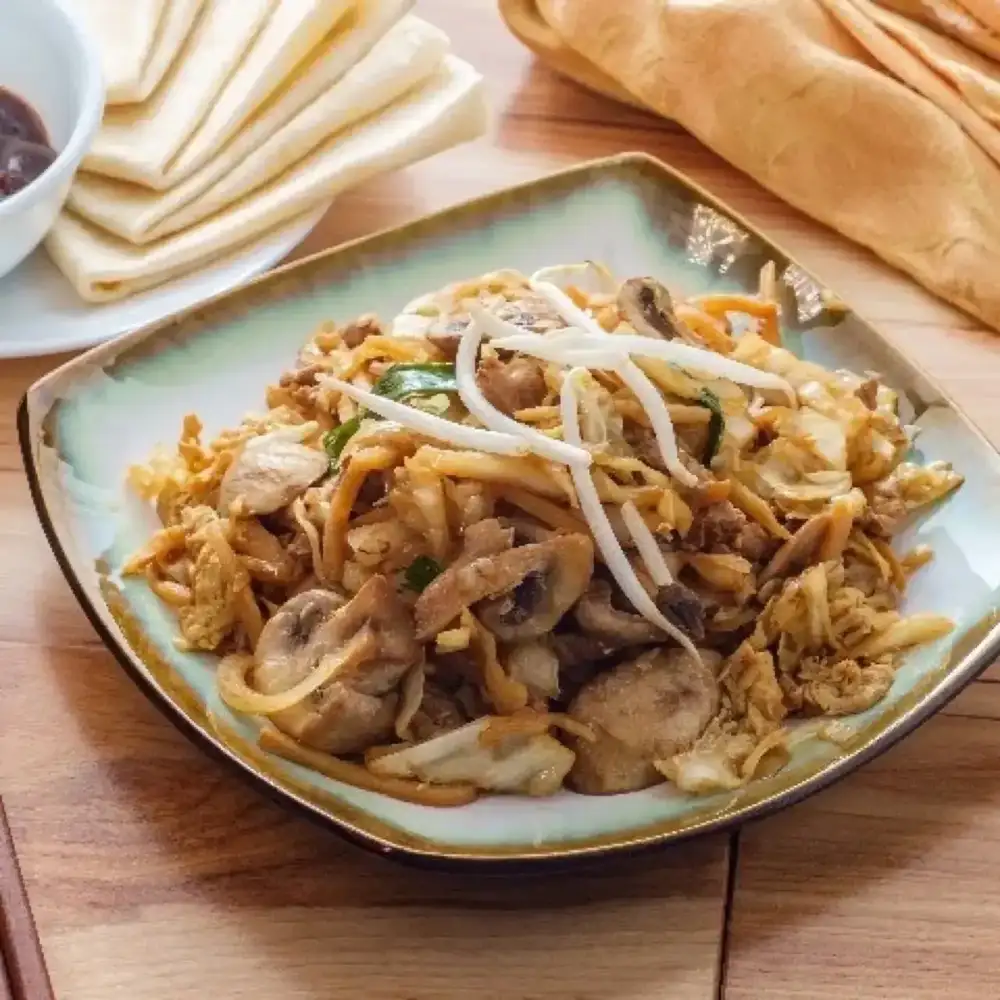
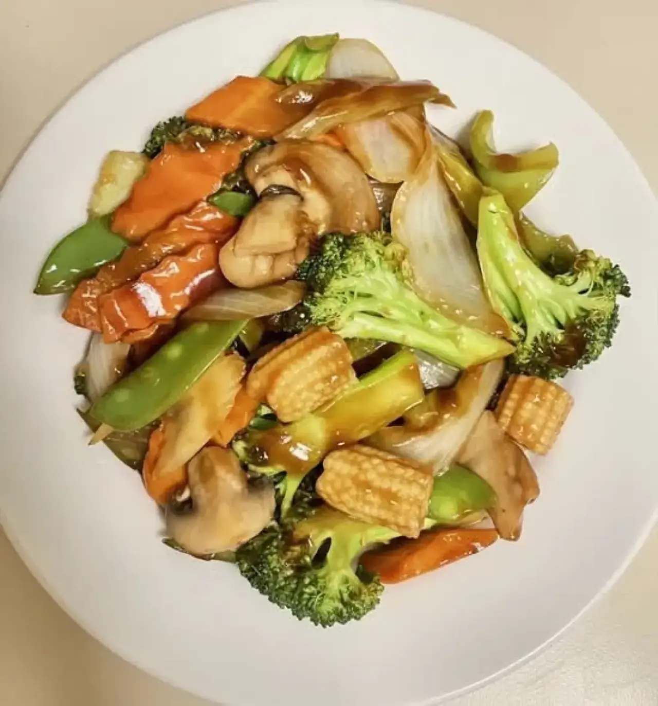
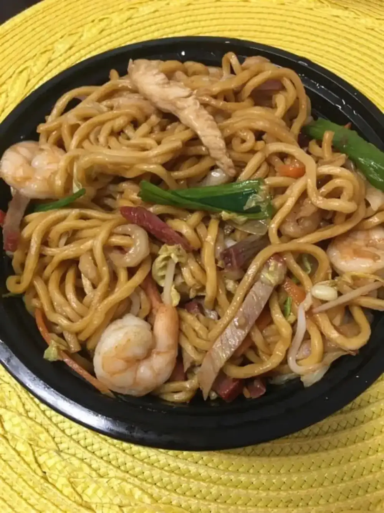
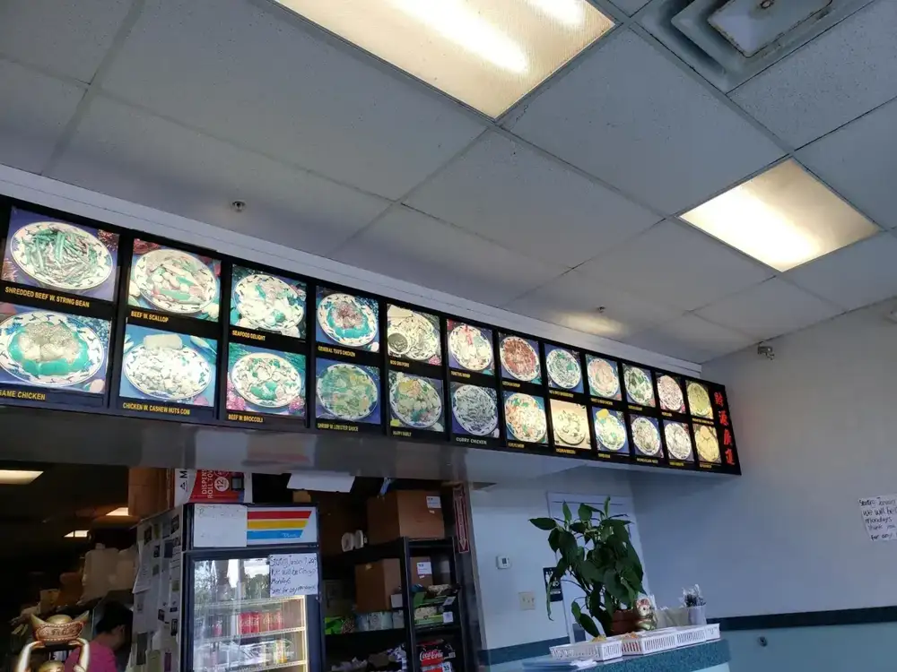

ITEM 1
Egg rolls and appetizers
Egg rolls generously filled with meat and veggies. Reviewers also love the crab Rangoon, dumplings and appetizers for two.
Chinese-American comfort food · W Linebaugh Ave
Egg rolls, General Tso's and sweet and sour soup, packed hot for pickup.

Order up
What reviewers order again and again.
Egg rolls generously filled with meat and veggies. Reviewers also love the crab Rangoon, dumplings and appetizers for two.

One reviewer calls the sweet and sour soup the best they have had.

General Tso's and sesame chicken, ordered by regulars.





4.1 ★ · 193 Google reviews
We just moved to this neighborhood and were looking for some good old Chinese-American comfort food. There is usually this style of restaurant in our local grocery store shopping plazas and they are typically decent. Kang's is a step above the rest. Not only did they make a bunch of dishes in a timely manner, but they all were HOT and very good.
Amazing food. Absolutely the best in the area. General Tso's chicken, sesame chicken, crab Rangoon, dumplings... Literally everything there is amazing. Great staff too! Super friendly and attentive. Will be returning anytime I'm in the area. Seriously do you and your loved ones a favor and order anything from here. You all will be greatly pleased. We have been.
I have eaten Chinese food from San Francisco to Houston , Omaha OKC and Toronto. Now retired here. This is not the table cloth napkin restaurant which is rare in Tampa for Chinese I have dined in those Tried both Yummies. They have an advantage of being ful service and dim sum. But the food at Kangs is ever bit as good. I am waiting in anticipation tonight for best hit and sour soup I have had anywhere.
Kitchen notes
Kang's Garden is a Chinese restaurant on West Linebaugh Avenue in Tampa, serving Chinese-American comfort food with online ordering.
Reviewers call the staff friendly and attentive. One says Kang's is a step above the usual shopping plaza Chinese.

Pickup / dine in
12221 W Linebaugh Ave, Tampa, FL 33626
We are closed on Mondays. Call ahead to place your order.